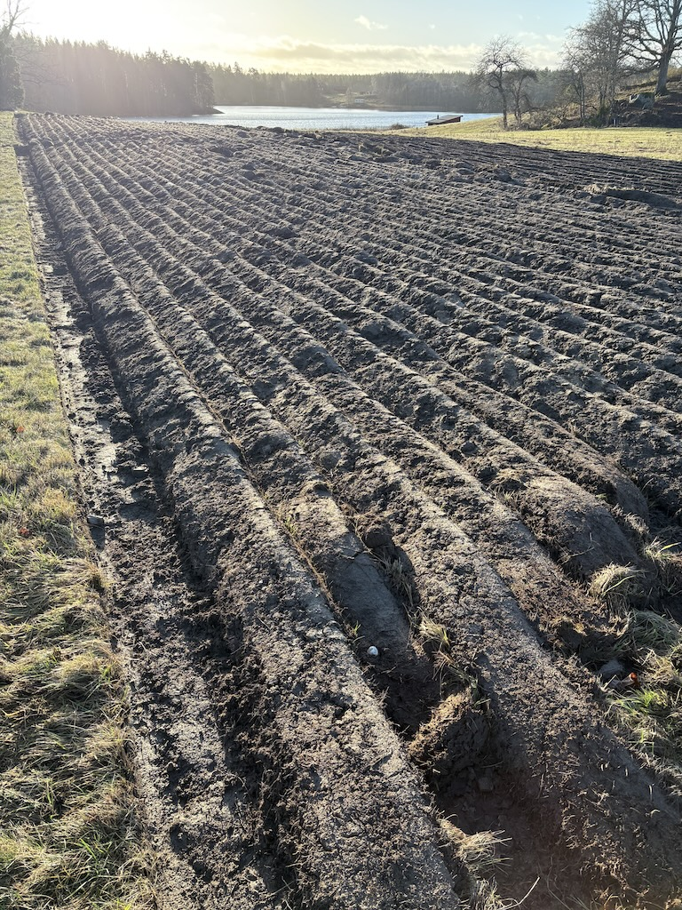

Vår lott är plöjd och redo
Snön smälte precis i tid — och nu är vår lott vackert plöjd och redo för vårplantering.
Lyckligtvis smälte snön under den senaste veckan och lämnade efter sig en mark som fortfarande var tillräckligt torr för att plöja. Så medan jag har varit borta har Bonde-Thom hållit sitt ord och plöjt åkern. Eller åtminstone hans nevö. De letade efter en plats att öva plöjning inför en lokal tävling de deltog i, och använde vår unga vingård som övningsfält. Jag måste säga att resultaten är fantastiska. Varje rad är vackert vältad och exakt parallell med sin granne. De har gjort ett enastående jobb.

Det enda problemet nu är att lotten ser mycket större ut än den jag hade markerat. Men det spelar ingen roll, jag är säker på att vi hittar ett bra användningsområde för den extra plöjda marken nu när vi väl har den.
Under tiden lyser vintersolen och platsen ser fantastisk ut. Vi lyckades. Om vi hade missat det här möjlighetsfönstret kanske vi inte hade kunnat plantera nästa vår, men nu är vi tillbaka på rätt spår och har en god chans.
Framåt och uppåt.